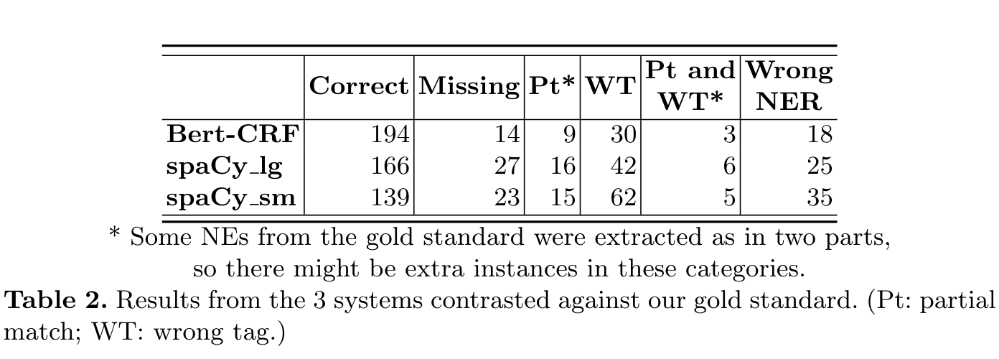
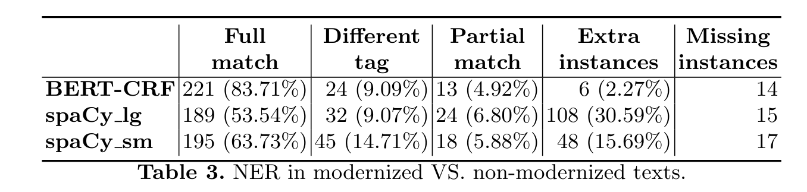

Codificação na geração, classificação e análise de informação histórica
IM-1256 - Introdução à História Digital
2024-10-08
História como ciência: sua relação com as fontes
Como definir História?
Como fazer/pesquisa/escrever História?
A partir dos capítulos 1 e 2 do livro de Marc Bloch, Apologia da História, ou, o ofício de historiador. Rio de Janeiro: J. Zahar, 2002.
Definição para Marc Bloch
Diz-se algumas vezes: “A história é a ciência do passado.” É [no meu modo de ver] falar errado.
[Pois, em primeiro lugar,] a própria ideia de que o passado, enquanto tal, possa ser objeto de ciência é absurda. Como, sem uma decantação prévia, poderíamos fazer, de fenômenos que não têm outra característica comum a não ser não terem sido contemporâneos, matéria de um conhecimento racional? (52)
Ação humana no passado?
o objeto da História é, por natureza, o homem (54).
“Ciência dos homens”, dissemos. É ainda vago demais. É preciso acrescentar: “dos homens, no tempo”. O historiador não apenas pensa “humano”. A atmosfera em que seu pensamento respira naturalmente é a categoria da duração[…]. É o próprio plasma em que se engastam os fenômenos e como o lugar de sua inteligibilidade. (55)
Ora, esse tempo verdadeiro é, por natureza, um continuum. É também perpétua mudança. Da antítese desses dois atributos provêm os grandes problemas da pesquisa histórica.(55)
Nunca se explica plenamente um fenômeno histórico fora do estudo de seu momento.(60)
Demônio das origens e a mania de julgamento (58-60)
- Buscar as origens para “melhor justificar ou condenar”?
- “confundir filiação com uma explicação”
O carvalho nasce da glande. Mas carvalho se torna e permanece apenas ao encontrar condições de ambiente favoráveis, as quais não resultam da embriologia. (58)
Pois, para grande desespero dos historiadores, os homens não têm o hábito, a cada vez que mudam de costumes, de mudar de vocabulário. (59)
Passado e presente para Marc Bloch
Já contei em outro lugar o episódio: eu estava acompanhando, em Estocolmo, Henri Pirenne. Mal chegamos, ele me diz: “O que vamos ver primeiro? Parece que há uma prefeitura nova em folha. Comecemos por ela.” Depois, como se quisesse prevenir um espanto, acrescentou: “Se eu fosse antiquário, só teria olhos para as coisas velhas. Mas sou um historiador. É por isso que amo a vida.” Essa faculdade de apreensão do que é vivo, eis justamente, com efeito, a qualidade mestra do historiador.(65-67)
Li muitas vezes, narrei frequentemente, relatos de guerras e de batalhas. Conhecia eu verdadeiramente, no sentido pleno do verbo conhecer, conhecia por dentro, antes de ter eu mesmo experimentado a atroz náusea, o que são, para um exército, o cerco, para um povo, a derrota? Antes de ter eu mesmo, durante o verão e o outono de 1918, respirado a alegria da vitória na expectativa, e decerto espero, de com ela encher uma segunda vez meus pulmões, mas o perfume, ai de mim, não será mais completamente o mesmo —, sabia eu verdadeiramente o que encerra essa bela palavra?
[…] Na verdade, conscientemente ou não, é sempre a nossas experiências cotidianas que, para nuançá-las onde se deve, atribuímos matizes novos, em última análise os elementos, que nos servem para reconstituir o passado: os próprios nomes que usamos a fim de caracterizar os estados de alma desaparecidos, as formas sociais evanescidas, que sentido teriam para nós se não houvéssemos antes visto homens viverem? (66)
Além de tudo, a educação da sensibilidade histórica nem sempre está sozinha em questão. Ocorre de, em uma linha dada, o conhecimento do presente ser diretamente ainda mais importante para a compreensão do passado.(66)
Fontes históricas
O que faz de um documento uma fonte histórica?
Onde elas estão?
Como encontrá-las, acessá-las, inquiri-las?
História tem método?
O que Marc Bloch diz sobre isso?
O conhecimento do passado é necessariamente “indireto”
Historiador sempre chega após o “experimento” acontecer. Mas esse sempre deixa “resíduos” = VESTÍGIOS
“O passado é, por definição, um dado que nada mais modificará. Mas o conhecimento do passado é uma coisa em progresso, que incessantemente se transforma e aperfeiçoa”. (75)
Procedimentos de investigação até então desconhecidos também surgiram. Sabemos melhor que nossos predecessores interrogar as línguas acerca dos costumes, as ferramentas acerca do artesão. Aprendemos sobretudo a mergulhar mais profundamente na análise dos fatos sociais.
[…] É que os exploradores do passado não são homens completamente livres. O passado é seu tirano. Proíbe-lhes conhecer de si qualquer coisa a não ser o que ele mesmo lhes fornece [, conscientemente ou não]. Jamais estabeleceremos uma estatística dos preços na época merovíngia, pois nenhum documento registrou esses preços em número suficiente.
é nas testemunhas à revelia que a investigação histórica, ao longo de seus progressos, foi levada a depositar cada vez mais sua confiança.(77)
Do mesmo modo, até nos testemunhos mais resolutamente voluntários, o que os textos nos dizem expressamente deixou hoje em dia de ser o objeto predileto de nossa atenção. Apegamo-nos geralmente com muito mais ardor ao que ele nos deixa entender, sem haver pretendido dizê-lo.(78)
Mas, a partir do momento em que não nos resignamos mais a registrar [pura e] simplesmente as palavras de nossas testemunhas, a partir do momento em que tencionamos fazê-las falar [, mesmo a contragosto], mais do que nunca impõe-se um questionário. Esta é, com efeito, a primeira necessidade de qualquer pesquisa histórica bem conduzida. (78)
Pois os textos ou os documentos arqueológicos, mesmo os aparentemente mais claros e mais complacentes, não falam senão quando sabemos interrogá-los. […] toda investigação histórica supõe, desde seus primeiros passos, que a busca tenha uma direção. […] Naturalmente, é necessário que essa escolha ponderada de perguntas seja extremamente flexível, suscetível de agregar, no caminho, uma multiplicidade de novos tópicos, e aberta a todas as surpresas.
De tal modo, no entanto, que possa desde o início servir de ímã às limalhas do documento. O explorador sabe muito bem, previamente, que o itinerário que ele estabelece, no começo, não será seguido ponto a ponto. Não ter um, no entanto, implicaria o risco de errar eternamente ao acaso.(79)
A diversidade dos testemunhos históricos é quase infinita. Tudo que o homem diz ou escreve, tudo que fabrica, tudo que toca pode e deve informar sobre ele. (79)
É bom, a meu ver, é indispensável que o historiador possua ao menos um verniz de todas as principais técnicas de seu ofício. Mesmo apenas a fim de saber avaliar, previamente, a força da ferramenta e as dificuldades de seu manejo. A lista das “disciplinas auxiliares” cujo ensino propomos a nossos iniciantes é demasiado restrita. Por qual absurdo paralogismo, deixamos que homens que, boa parte do tempo, só conseguirão atingir os objetos de seus estudos através das palavras ignorem, entre outras lacunas, as aquisições fundamentais da linguística?
[…] No entanto, por maior que seja a variedade de conhecimentos que se queira proporcionar aos pesquisadores mais bem armados, elas encontrarão sempre, e geralmente muito rápido, seus limites. Nenhum remédio então senão substituir a multiplicidade de competências em um mesmo homem por uma aliança de técnicas praticadas por eruditos diferentes, mas [todas] voltadas para a elucidação de um tema único. […]
Esse método supõe o consentimento no trabalho por equipes. Exige também a definição prévia, por comum acordo, de alguns grandes problemas predominantes. São êxitos de que nos encontramos ainda bastante distantes. Eles determinam porém, numa larga medida — não duvidemos —, o futuro de nossa ciência. (81)
Reunir os documentos que estima necessários é uma das tarefas mais difíceis do historiador. De fato ele não conseguiria realizá-la sem a ajuda de guias diversos: inventários de arquivo ou de bibliotecas, catálogos de museus, repertórios bibliográficos de toda sorte. Vê-se [às vezes] pedantes à cavaleiro espantarem-se com o tempo sacrificado por alguns eruditos a compor semelhantes obras, por todos os trabalhadores a se informar sobre sua existência e seu manejo. […] A ferramenta [, decerto,] não faz a ciência.
[…] Mas uma sociedade que pretende respeitar as ciências não deveria se desinteressar de suas ferramentas. Sem dúvida, quanto a isso, também seria sensata em não se reportar a corpos acadêmicos, uma vez que seu recrutamento, favorável à preeminência da idade e propícia aos bons alunos, não predispõe particularmente ao espírito de empreendimento. Nossa Escola de Guerra e nossos estados-maiores não são os únicos, em nosso país, a ter conservado a mentalidade do carro de bois na época do automóvel.
Entretanto, por mais bem feitos, por mais abundantes que possam ser, esses marcos indicadores seriam somente de pouca serventia para um trabalhador que não tivesse, previamente, alguma ideia do terreno a explorar. A despeito do que às vezes parecem imaginar os iniciantes, os documentos não surgem, aqui ou ali, por efeito [de não se sabe] qual misterioso decreto dos deuses.
[…] Sua presença ou ausência em tais arquivos, em tal biblioteca, em tal solo deriva de causas humanas que não escapam de modo algum à análise, e os problemas que sua transmissão coloca, longe de terem apenas o alcance de exercícios de técnicos, tocam eles mesmos no mais íntimo da vida do passado, pois o que se encontra assim posto em jogo é nada menos do que a passagem da lembrança através das gerações.
À frente das obras históricas do gênero sério, o autor em geral coloca uma lista das cotas de arquivos que vasculhou, das coletâneas de que fez uso. Isso é muito bom. Mas não basta. Todo livro de história digno desse nome deveria comportar um capítulo ou [, caso se prefira], inserida nos pontos de inflexão da exposição, uma série de parágrafos que se intitulariam algo como: “Como posso saber o que vou lhes dizer?”
[…] Estou convencido de que, ao tomar conhecimento dessas confissões, inclusive os leitores que não são do ofício experimentariam um verdadeiro prazer intelectual. O espetáculo da busca, com seus sucessos e reveses, raramente entedia. É o tudo pronto que espalha o gelo e o tédio (82-83)
Como fazer isso na era digital?
- Novas fontes?
- Novas técnicas?
- Novas perguntas?
Processamento de Linguagem Natural
- Computadores “lendo” e “entendendo” linguagem humana
- Análise textual (gramática, semântica, lexicográfica, etc.)
- NER (Name Entity Recognition) - Nomes, entidades, etc.
Produção de conhecimento histórico por computadores?
Instrumental básico de historiadores/as - manipular evidências, transformar em ‘informações racionalmente classificadas’, escrever narrativas: é ao mesmo tempo método e técnica, mas também sensibilidade, ‘intuição alta’ (nas palavras de Ginzburg):
Chegarão as máquinas a desenvolver esse tipo de “alta intuição”? Em que tipo de operação cognitiva a inteligência artificial já pode, hoje em dia, auxiliar a pesquisa histórica? (FORTES, A.; ALVIM, L. G. M, 2020, p.215)
Exemplo de uso de NLP e NER
ZILIO, Leonardo; FINATTO, Maria; VIEIRA, Renata. Named Entity Recognition Applied to Portuguese Texts from the XVIII Century. 2022. Disponível em: https://dspace.uevora.pt/rdpc/handle/10174/32165.
Buscar informações em textos através de Natural Language Processing (NLP) utilizando Named Entity Recognition (NER).
“It corresponds to the recognition and categorization of entities mentioned in a text sample or corpus. Examples of named entities are proper names, events, places, temporal and quantitative data, etc. These extracted entities can then be further mapped to a knowledge base (KB), in special a Digital Humanities KB (DHKB) [2]. These DHKBs allow for the identification and combination of existing knowledge about historical facts from different sources.” (Zilio et al., 2022, p. 2)
O que é Digital Humanities knowledge base? Ver:
“Golub, K., Liu, Y.H.: Information and knowledge organisation in digital humanities: Global perspectives (2022)” (Zilio et al., 2022, p. 9)
Objetivo do artigo:
Identificar um sistema de NER para o português que funcione para extração de informação de textos médicos do século XVIII.
Método (p.2)
- Criação de um “gold standard” baseado em um transcição modernizada de três amostras de textos; e em seguida avaliaram o sistema de extração de entidades nomeadas contra esse “gold standard”;
- Comparação enter o sistema de extração de NE nas transcrições modernizadas com a extração de NE nas transcrições “não-modernizadas”;
- Depois de avaliar o melhor sistema de NER baeado nesses dois experimentos, o objetivo foi conduzir uma extração completa de entidades nomeadas do corpus médico do século XVIII.
Related work
A questão do OCR:
“The authors also report that most of the errors occurred because of the low quality of the OCR result.” (Zilio et al., 2022, p. 2)
Related work
A questão do treinamento:
“For medieval French, Aguilar and Stutzmann [1] present a corpus and trained a new system for legal documents of the XIII and XIV centuries. Their performance measures are around 90%.” (Zilio et al., 2022, p. 3)
Methodology
3.1 Corpus
Três amostras de textos variados no mesmo período, com extensão similar. Utilizaram versão modernizadas e não-modernizadas para o estudo.
Methodology
3.2 Gold standard
Criado a partir das versões modernizadas.
“Two linguists, authors of this paper, annotated all samples independently and exhaustively.” (Zilio et al., 2022, p. 4)
Total de 262 entidades nomeadas.
Zilio et al., 2022, p. 5
Methodology
3.3 Off-the-shelf NER tools
Três modelos: 2 do spaCy (pretreinados: spaCy lg and spaCy sm) e um é um modelo BERT-CRF treinado para o português (Souza et al.)
Methodology
3.4 Evaluation approach
“we analyzed whether the systems were able to extract the correct NEs from the samples, without taking the source segments into consideration.” (Zilio et al., 2022, p. 6)
Results (p. 6)
4.1. NER on modernized samples
Zilio et al., 2022, p. 6
“Looking at the annotations generated by each system, it becomes clear that BERT-CRF had a better precision for the annotation of NE tags.” (Zilio et al., 2022, p. 6)
“Some recurrent mistakes of this system were the annotation of locations as persons and also the annotation of any digit as a value.” (Zilio et al., 2022, p. 6)
spaCy:
“incorrect annotation of tokens as NE, and also in the annotation of persons as locations (the opposite of BERT-CRF model).” (Zilio et al., 2022, p. 7)
“the tagging of extra tokens preceding or following a NE.” (Zilio et al., 2022, p. 7)
“This was not a problem at all for BERT-CRF.” (Zilio et al., 2022, p. 7)
BERT-CRF
“BERT-CRF had the best result when analyzing the extraction from a modernized version of the texts. However, since the process of modernizing these texts is similar to the process of a translation, it is unrealistic to expect all historical texts to be translated before applying a NER system to them. So we cannot use an NE extraction based on modernized versions as a parameter for old texts.” (Zilio et al., 2022, p. 7)
4.2 NER systems: modernized vs. non-modernized extraction
Zilio et al., 2022, p. 7
4.3 Annotation of Semedo’s Work
“The non-standard spelling”:
“even in such adverse context, BERT-CRF annotations were still consistent, and it proved to be the most robust of the three models, as it was able to handle one of the main issues of working with old texts: the non-standard spelling.” (Zilio et al., 2022, p. 8)
A anotação está disponível aqui: https://github.com/uebelsetzer/NER_for_Portuguese_XVIII-Century_Texts
Final Remarks
“After analyzing the results of both experiments, we concluded that BERTCRF had better performance, even when considering the original spelling of the historical texts. Both spaCy models had issues in recognizing NEs, changing the tag of many entities and adding wrong NEs, especially in the non-modernized versions of the texts. Considering these results, we used BERT-CRF to annotate a large sample of non-modernized texts extracted from Semedo’s work Observa ̧coens medicas doutrinaes de cem casos gravissimos.” (Zilio et al., 2022, p. 9)